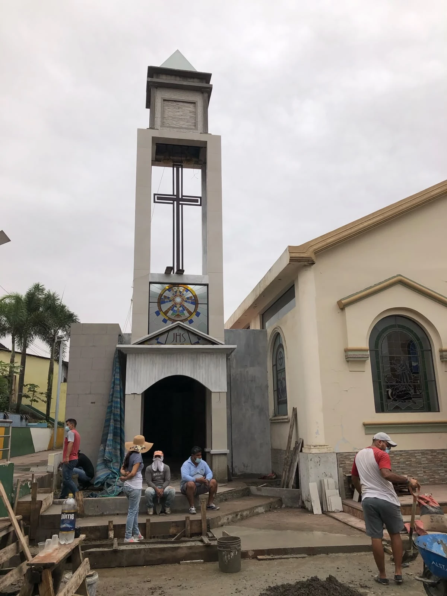

NUESTRO OFICIO / INSTALACIÓN
Instalación
La integración del vitral con la arquitectura
Diseñamos y ejecutamos estructuras portantes en hierro, madera, aluminio o concreto, y también aprovechamos o adaptamos estructuras existentes de distintos materiales. Incorporamos sistemas de refuerzo para limitar las deformaciones derivadas del peso propio, las dimensiones de los paneles o el paso del tiempo.

NUESTRO TRABAJO
Nuestra manera de trabajar
Integración arquitectónica
La instalación vincula el vitral con la arquitectura y requiere considerar sus dimensiones, peso, estabilidad, fijaciones y comportamiento a lo largo del tiempo. Cada intervención comienza con la verificación de los vanos y de las condiciones del espacio.
Estructuras portantes
Diseñamos y ejecutamos nuevas estructuras portantes en hierro, madera, aluminio o concreto, según las necesidades del proyecto. También trabajamos con estructuras existentes de distintos materiales, evaluando su estado y realizando las adecuaciones necesarias.
Refuerzo y montaje
Prestamos especial atención a los elementos de refuerzo y soporte que ayudan a limitar las deformaciones de los paneles, tanto por sus dimensiones y peso propio como por el paso del tiempo. Realizamos el montaje, la fijación y la revisión final para favorecer la estabilidad y conservación de la obra.